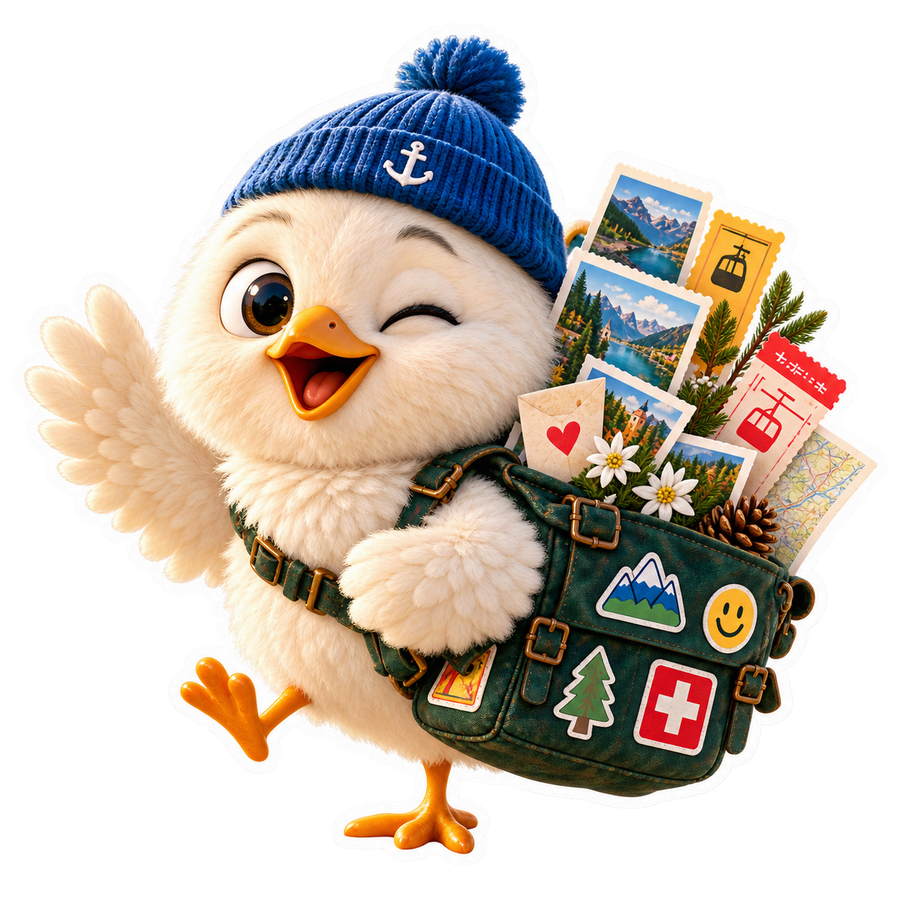
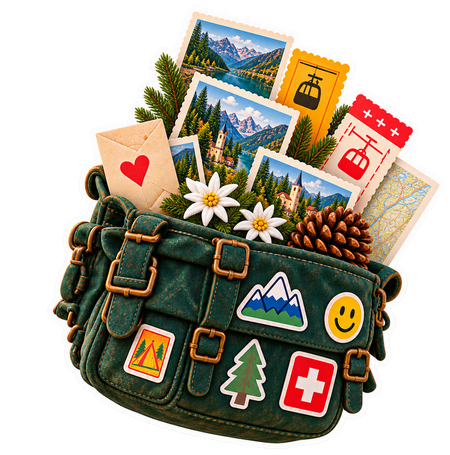
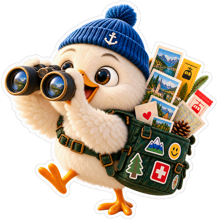
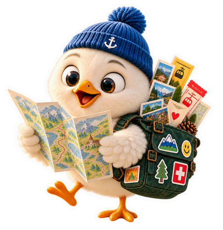

Chliine Vogel. Grossi Plän.
Dein Wochenende hat soeben einen neuen besten Freund.
Jeden Donnerstag um 8 Uhr bringt dir der Gwunderfink drei bis fünf handverlesene Ausflüge, Anlässe und Geheimtipps rund um deinen Ort. Direkt in WhatsApp.
- In der Testphase gratis
- Eine Nachricht pro Woche
- Jederzeit abbestellbar mit STOP

🐥 Gwunderfink für Villmergen
Hoi Lea! Das läuft dieses Wochenende rund um Villmergen:
🎨 Kinderatelier in der Bibliothek · Sa 10:00 · Wohlen · ab 5 J. · gratis🚂 Dampfbahn-Fahrtag · So 13:00 · Bremgarten · alle Alter · CHF 8🌳 Waldspielgruppe offen · Sa 14:00 · Villmergen · 3 bis 7 J.🌧️ Hallenbad-Familientag · So 10:00 · Wohlen · Schlechtwetter-Tipp🎭 Figurentheater «Der Mond» · Sa 16:00 · Muri · ab 4 J. · CHF 12
💡 Gut zu wissen: Am Sonntag fährt der Zirkuszug bereits um 9 Uhr ab Wohlen.
Antworte STOP, um dich abzumelden.

Eine Tasche. Tausend Geschichten. Fünf davon jede Woche für dich.
Keine Eventliste, sondern eine Auswahl: Was passt zum Alter deiner Kinder, zum Wetter, zur Distanz und lohnt sich wirklich. Jeder Tipp mit Zeit, Ort, Preis und Link zum Veranstalter.
- 📍Dein Ort, nicht dein Standort.
Du wählst eine Ortschaft. Der Fink sucht im Umkreis von rund 15 Kilometern, auch über Kantonsgrenzen hinweg.
- 🔍Nur Echtes.
Jeder Anlass hat eine Quelle. Datum, Ort und Alter werden vor dem Versand nochmals geprüft. Gibt's wenig, schicken wir wenig.
- 🤫Eine Nachricht pro Woche.
Donnerstag, 8 Uhr. Nicht mehr. Keine Werbung, keine Weitergabe deiner Nummer.
So arbeitet der Fink.
Jede Woche dieselbe Runde: sammeln, prüfen, packen, liefern.

- Täglich
Sammeln
Der Fink liest Gemeindeagenden, Veranstalter-Seiten, Bibliotheken, Museen, Vereine und Familienblogs der Region.
- Mittwoch
Prüfen
Datum, Ort, Altersangabe, Preis und Anmeldung werden gegen die Originalquelle geprüft. Abgesagtes fliegt raus.
- Mittwoch, 18:00
Packen
Für jeden Ort entsteht eine eigene Ausgabe: drei bis fünf Tipps, die zusammen ein gutes Wochenende ergeben.
- Donnerstag, 08:00
Liefern
Nach einem letzten Check am frühen Morgen landet die Ausgabe in deinem WhatsApp. Pünktlich zum Planen.
Wir starten im Aargau.
Du gibst deine Postleitzahl an, der Fink sucht im Umkreis von rund 15 Kilometern, auch über Kantonsgrenzen hinweg. Der Pilot läuft im Kanton Aargau. Wohnst du anderswo, trägst du dich auf die Interessensliste und entscheidest mit, welche Region als Nächstes kommt.
- 5612 Villmergen
- 5707 Seengen
- 5620 Bremgarten
- 5000 Aarau
- 5600 Lenzburg
- Deine PLZ

Jetzt mitmachen. In der Testphase gratis.
Der Fink ist frisch geschlüpft und sucht Familien, die ihn ausprobieren. Du bekommst den Newsletter kostenlos, eine Nachricht pro Woche, und hilfst mit deinem Feedback, ihn besser zu machen.
Der Fink packt noch seine Tasche.
Die Anmeldung geht in Kürze auf: ein gratis WhatsApp-Newsletter für Familien im Aargau, eine Nachricht pro Woche. Bis dahin kannst du dich hier in Ruhe umschauen.
Fragen vorab? hallo@gwunderfink.ch
Fragen, die wir oft hören.
Was kostet der Gwunderfink?
In der Testphase nichts. Du bekommst den Newsletter gratis. Sollten wir später ein bezahltes Abo einführen, sagen wir es rechtzeitig und fragen vorher. Niemand wird ungefragt zahlungspflichtig.
Wie melde ich mich an?
Postleitzahl und WhatsApp-Nummer eintragen, Haken setzen, fertig. Danach schickt dir der Fink einen sechsstelligen Code per WhatsApp. Gibst du ihn ein, ist deine Nummer bestätigt und du bist ab dem nächsten Donnerstag dabei.
Wie melde ich mich wieder ab?
Jederzeit mit der Antwort STOP in WhatsApp. Danach kommt keine Nachricht mehr. Kein Formular, keine Begründung nötig.
Für welche Orte gibt es den Gwunderfink?
Der Pilot läuft im Kanton Aargau. Du gibst deine PLZ an, der Fink sucht im Umkreis von rund 15 Kilometern, auch über Kantonsgrenzen hinweg. Weitere Regionen folgen, und die Interessensliste entscheidet mit, welche zuerst.
Woher kommen die Anlässe?
Aus öffentlichen Gemeindeagenden, Veranstalter-Websites, Bibliotheken, Museen, Vereinen und Familienblogs der Region. Wir verlinken immer auf die Originalquelle und übernehmen keine fremden Bilder.
Was passiert mit meiner Nummer?
Sie wird ausschliesslich für den Versand des Newsletters gespeichert. Nie weitergegeben, nie für Werbung. Alles Weitere in der Datenschutzerklärung.
Wer steckt dahinter?
Gwunderfink ist ein Angebot der Ryse Solutions KLG aus dem Aargau, einem kleinen Schweizer Team, das selber Familie hat und am Donnerstag wissen will, was am Wochenende läuft. Impressum
Donnerstag, 8 Uhr. Dein Wochenende ist geplant.
In der Testphase gratis, eine Nachricht pro Woche, jederzeit abbestellbar. Wir starten im Aargau.